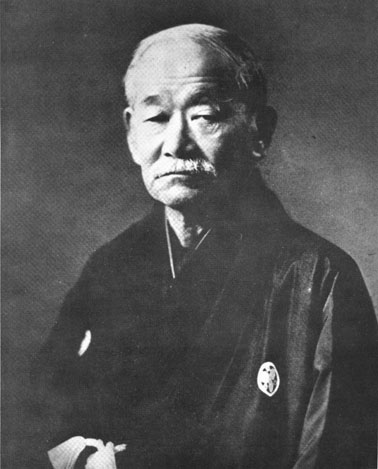

柔能制剛
柔道
修練

강함을 제압한다.
과정을 선택하세요
굳히기본 / 조르기
나의 수련 기록
진행도는 이 브라우저에 저장됩니다.
손 위치 연습 완료0 / 3
FOUNDATIONS / OBI
띠 매는 법
띠의 길을 눈으로 따라, 한 단계씩 내 손으로.
GHOST BELT겹 사이에 끼워, 고리 통과시연 + 카메라 가이드
반투명 띠의 움직임을 보거나 카메라 위 가이드를 따라 해 보세요.
내려다보는 시점으로도 확인할 수 있습니다.
01 / 07
가운데를 배꼽에
통과 지점에서 잠깐 멈춰 보여줍니다
띠 양끝에 서로 다른 색 테이프를 넓게 붙이세요. 선명한 파랑·분홍처럼 옷·배경과 다른 색이 좋습니다. A·B 버튼을 누른 뒤 영상에서 해당 색 부분을 눌러 등록하세요.
미등록미등록
카메라를 켜면 색을 등록할 수 있습니다.
A·B는 양끝을 구분하는 표시입니다. 띠 끝의 색으로 A·B를 구분합니다.
Nami-juji-jime
십자조르기
흰색 손의 시연을 보고, 고정된 상대의 깃 위치에 내 손을 맞춰 보세요.
VIRTUAL PARTNER양 손바닥 아래목 가까운 깃 · 교차한 손목·전완 비틀기
깃 위에서 손을 쥐면 잡히고, 손을 펴면 놓습니다. 목 가까운 깃을 잡고 교차한 손목과 전완을 함께 비틀어 보세요. 손가락이 가려져도 손목이 보이면 추적을 이어갑니다.
동작 일치도 / 100—몸을 인식하면 점수가 표시됩니다
흰색 손의 이동을 따라하세요.
흰색 손의 시연을 먼저 확인하세요.
00:00
동작 판정 확인
왼쪽: 깃 잡기 전
오른쪽: 깃 잡기 전
최근 30초 좌표와 판정값만 저장합니다. 영상은 저장하거나 전송하지 않습니다.카메라 연결 후 자세를 확인하고 연습을 시작하세요.